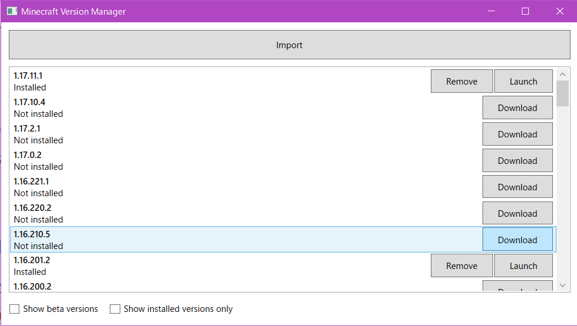
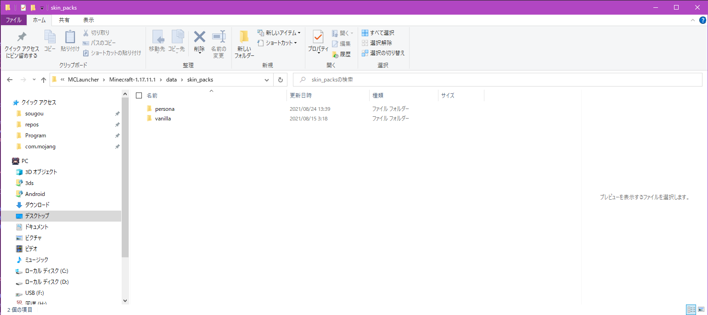

前提準備
※データが消えたりおかしくなっても自己責任でお願いします
マイクラのディレクトリ
Download ､自作など､人によって環境が変わるのであまり詳しくは説明しません
MCLancher で入れる
MCLancher をDLします｡IObit より簡単だと個人的に思っています｡(適応するのが)
DLしたら起動して､自分の導入したいバージョンの横にある､ [ Download ] を押してファイルをダウンロードしてください
ここを押すと画像を表示

※Beta版を使う予定がない場合､下にある Show beta version のチェックを外すことをオススメします｡(そっちの方が少なくて見つけやすいです)
スキンファイル を置き換える
MCLancher で指定のバージョンのファイルをDL出来たら､スキンファイルを置き換えていきます
※Persona フォルダで置き換えることをオススメします
ディレクトリは MCLancher と同じフォルダに DLされています ( 例 : Minecraft-1.17.11.1 )
その下にある がスキンファイルが置いてある場所です｡ (ここを置き換えれば適応出来ます)
ここを押すと画像を表示

適応 (起動する)
上記のことが完全に出来たら MCLancher から Download したバージョンの横に [ Launch ] があると思うのでそれを押せば起動出来ます
起動してスキンが適応出来たら終了です｡お疲れさまでした